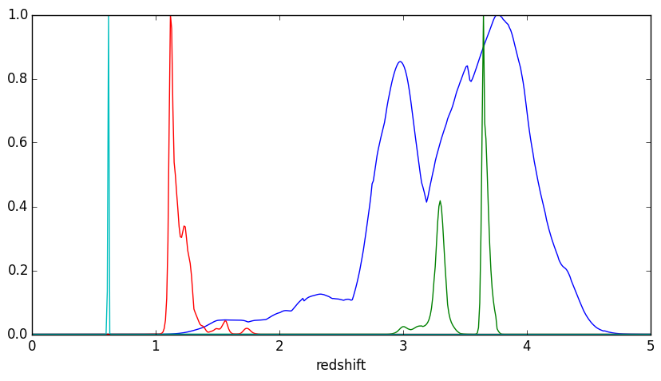
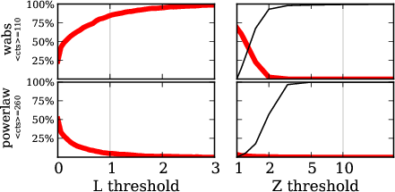

Applying Bayesian techniques to probe AGN geometry
Santiago de Chile / Mar 2015
Johannes Buchner / MPE
in collaboration with A. Georgakakis, K. Nandra, L. Hsu, C. Rangel, M. Brightman, A. Merloni and M. Salvato
Buchner et al. 2014 - arxiv:1402.0004
Problem
- at z=0.5-3 : peak of star formation & AGN activity
- What is the right spectral model of AGN
- To derive luminosities, $N_H$, ...
- and to understand the "average" AGN
- local AGN: very complex spectra
Set-up

Data: CDFS
Brightman et al. 2014  Hsu et al. 2014Example - Source 179 z=0.605, 2485 counts
powerlaw

Example - Source 179 z=0.605, 2485 counts
wabs

Example - Source 179 z=0.605, 2485 counts
torus+scattering
Example - Source 179 z=0.605, 2485 counts
torus+pexmon+scattering

Example - Source 179 z=0.605, 2485 counts
wabs+pexmon+scattering

Model comparison
Which physical effects are important? Which model is probably the right one for this data?- Goodness of Fit?
- Does the model "match" the data?
- Requires binning
- Can not decide between two models which "match".
- Likelihood ratio?
- Tells probability to mistake one model for another model
- Requires simulation in every situation
Another way: Bayesian inference
- For each model, compute integral $Z$ of Poisson likelihood (C-stat) over parameter space
- (instead of just maximum likelihood, minimal C-stat)
Parameters: of torus+scattering
- Normalisation ~ luminosity
- Column density $N_H={10}^{20-26}\text{cm}^{-2}$
- Soft scattering normalisation: $f_{scat} < 10\%$
- Photon index: $\Gamma$
- Redshift
Parameters: of torus+scattering
- Uniform: log Normalisation ~ log Luminosity
- Uniform: Column density $\log N_H/\text{cm}^{-2} = {20-26}$
- Uniform: Soft scattering normalisation: $\log f_{scat}={10}^{-10 ... -1}$
- Photon index: $\Gamma \sim 1.95 \pm 0.15$ (Nandra&Pounds 1994)
- Redshift: from pdz
Model comparison results

Model comparison results

Model comparison
- Can distinguish some models, others are equally probable
- Have made use of
- local AGN information $\leftrightarrow$ $\Gamma$
- other $\lambda$ information $\leftrightarrow$ $z$
- Have derived parameter distributions and $Z$ simultaneously
- incorporating uncertainty in $\Gamma$, $z$
- Likelihood averaging punishes model diversity not realised in the data
- Can tell that it does not know
How can geometries be distinguished?
- How to increase strength of data?
- Combine objects
- Traditionally: stacking
- lose information in averaging
- averaging of different redshifts?
- Here, multiply Z to combine information $$Z_1 = \prod_\mu Z_1^\mu$$
- Buchner et al. 2014 - http://arxiv.org/abs/1402.0004
Results for the full CDFS sample
Conclusions
- Absorbed powerlaw necessary
- Soft scattering powerlaw detected
- Additional Compton-reflection detected
- Torus model preferred (also in CT AGN)
Practicalities
- https://github.com/JohannesBuchner/BXA
- uses MultiNest (Feroz&Hobson 2008)
- via PyMultiNest
Fitting in PyXspec
from xspec import *
Fit.statMethod = 'cstat'
Plot.xAxis = 'keV'
s = Spectrum('example-file.fak')
s.notice("0.2-8.0")
m = Model("pow")
# set parameters range : val, delta, min, bottom, top, max
m.powerlaw.norm.values = ",,1e-10,1e-10,1e1,1e1" # 10^-10 .. 10
m.powerlaw.PhoIndex.values = ",,1,1,5,5" # 1 .. 3
m.fit()
Analysis in PyXspec
from xspec import *
Fit.statMethod = 'cstat'
Plot.xAxis = 'keV'
s = Spectrum('example-file.fak')
s.ignore("**"); s.notice("0.2-8.0")
m = Model("pow")
# set parameters range : val, delta, min, bottom, top, max
m.powerlaw.norm.values = ",,1e-10,1e-10,1e1,1e1" # 10^-10 .. 10
m.powerlaw.PhoIndex.values = ",,1,1,5,5" # 1 .. 3
import bxa.xspec as bxa
transformations = [
bxa.create_uniform_prior_for( m, m.powerlaw.PhoIndex),
bxa.create_jeffreys_prior_for(m, m.powerlaw.norm) ]
bxa.standard_analysis(transformations,
outputfiles_basename = 'simplest-',)
Summary
- Bayesian inference is useful for
- estimating physical parameters (yields probability distributions)
- comparing physical models
- Drawbacks: Computational cost
- Geometry of AGN obscurer is a torus (not a sphere, not a thin disk)
- Additional components
- Soft scattering powerlaw -- Thomson scattering off ionised clouds?
- Compton reflection -- Accretion disk? Thicker parts of the torus?
Backup slides
Pragmatic viewpoint
distinguish two models via data can use any statistic
does not have to be probabilistic
- can be counts in the 6keV bin
- determine discriminating threshold via simulations
- false association rate ($B\rightarrow A$, $A\rightarrow B$)
- correct association rate ($A\rightarrow A$, $B\rightarrow B$)
Comparison $\hat{L}$ vs. $Z$

red: falsely choose powerlaw, for wabs input
red: falsely choose wabs, for powerlaw input
$Z$ more effective than $\hat{L}$
Bayesian evidence $$ {P(A|D)\over P(B|D)} = {P(A)\over P(B)} \times {Z_A\over Z_B} $$
interpretation of Z-ratio under flat priors:
- prob. that this model is the right one, rather than the other.
- A, B or equal
Nested Sampling
 draw randomly uniformly 200 points
draw randomly uniformly 200 points
always remove least likely point, replace with a new draw of higher likelihood
 how to draw new points efficiently?
how to draw new points efficiently?
MultiNest does it via clustering and ellipses
Nested Sampling with MultiNest
explores the problem in
- high dimensions (3-20)
- handles multiple maxima
- handles peculiar shapes
- runs efficiently to convergence
(typically 10000-40000 points)
measures and describes shapes (like MCMC)
Connecting
Need to connect C-stat calculation with algorithmBXA: Bayesian X-ray Analysis
- MultiNest for Sherpa / (Py)Xspec
- installed on ds42 under
/utils/bxa
- documentation: github.com/JohannesBuchner/BXA
Analysis
Likelihood value evaluated "everywhere"
-
ML analysis: find confidence intervals
- defined via: how often the estimator (maximum) gives the right answer
- different for different estimators - property of the method
- credible intervals
- defined via: prob. that the true value is inside this range rather than outside is x%.
results coincide for some choice of prior (usually "flat").
How?
posterior "chain" from MCMC/nested sampling: representation through point density
| norm | $N_H$ | $z$ |
|---|---|---|
| -4.1 | 22.4 | 2.3 |
| -4.3 | 22.45 | 2.4 |
| -4.3 | 22.38 | 2.5 |
| ... | ... |
just make histogram of 1/2 columns
contains all correlations
Error propagation: example
| norm | $N_H$ | $z$ |
|---|---|---|
| -4.1 | 22.4 | 2.3 |
| -4.3 | 22.45 | 2.4 |
| -4.3 | 22.38 | 2.5 |
| ... | ... |
(norm, $N_H$, $z$, ...), set the model
- set $N_H$ = 0
- compute intrinsic flux
- compute luminosity
using $z$ and flux
incorporates uncertainty in $z$ and the parameters!
- just do your calculation with every value instead of one
model inadequacy
Have cool tools now, but:- Is the model right?
- Where is the model wrong?
- Systematic effects?
- Discover new physics beyond the model
Common route: residuals
New idea: Q-Q plot (no binning)
good fit if straight line
Q-Q plot primer


Generate ideas for new models

Summary
-
(see 5.1, Appendix 3)Parameter estimation:
explore multiple maxima
general solution with nested sampling
-
Model comparison:
Likelihood ratio is less effective than Z ratios(see 5.2, Appendix 2)
computed by nested sampling; has right interpretation -
(see 5.3, Appendix 1)Model discovery:
Q-Q plots + model comparison